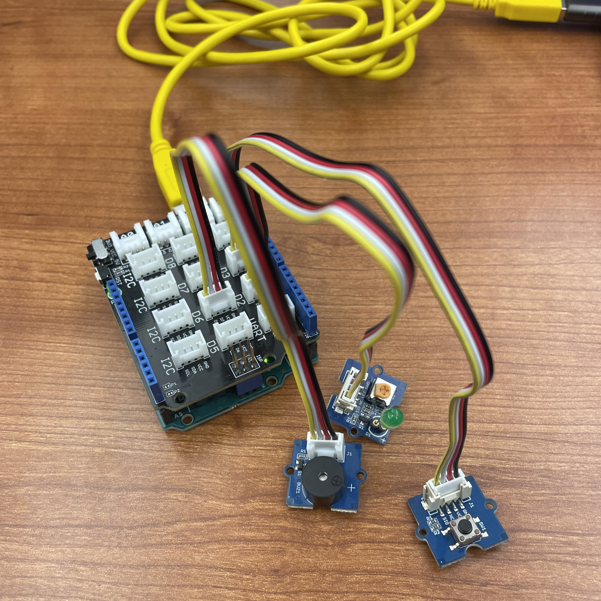
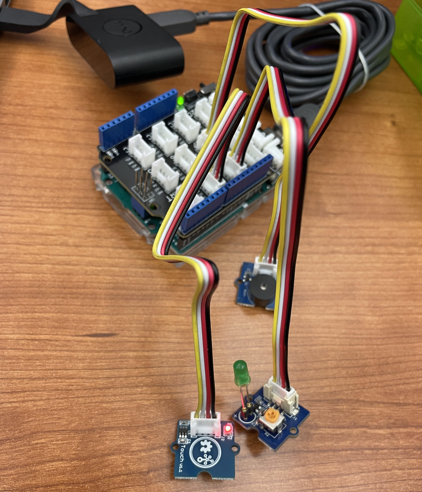

Coding Projects
Swimming Reaction Time Prototype

Team Members
- Mililani Rosare - Human-Computer Interaction
- Emma Thomas - Human-Centered Computing
Overview
A project developed for the Mobile Wearable Ubiquitous course at RIT. We wanted to develop an early prototype using an Arduino and various sensors.
About the Device
Starter(left)
- Start button - starts the buzzer and light, and sends command, 'START' to python
- Buzzer - goes off for 400ms to start the athlete
- LED - flashes for 400ms to start the athlete
Timer (right)
- Touch sensor - the timer starts when the second Arduino receives a command from python, and stops when the touch sensor is released
- Buzzer - goes off 3 times if there is a false start
- LED - for testing purposes, to make sure the Arduinos are connected


Device Demo
Computer Demo
Code Structure
Reaction-Time-Starter.ino
- Flashed the LED and set off the buzzer on button click
- Sent command “START” to python with serial communication
Reaction-Time.py
- Asks user to input name before starting the system
- Listens for the “START” command and sends a command to the timer arduino
- Waits for the timer arduino to send over the reaction time, and determines if it is a false start or not
- If it is a valid start, adds the data to Firebase and prints to the console.
Reaction-Time-Timer.ino
- Gets the current time with millis() when it receives the command from python
- Has an interrupt attached to the touch sensor, calls a method to get the end time in millis() when released
- Calculates RT by subtracting end time from start time, sends it over to python
Reaction-Time React App
- Constantly looks at the Firebase database and updates the selected user and their reaction times with UseEffect() loops
- The selected-graph property in Firebase is reset to the user's name, so when this is changed, React will change the graph
- Also contains false start information and current average
Successes
- We got most of our planned system working
- Our system prints reaction times for a user that appear to be fairly accurate
- The code takes the user and their time and adds it to a database
- A react program uses the database to create a graph of the user's times
Setbacks
- Our first attempt at coding it was not working at all, due to the Arduino only being capable of one thing at a time
- The buzzer would go off for 400 ms, so if the reaction time was less than that, it would not register
- Since we needed both Arduinos to code and test, we had to always work together, in person, limited the time we could work
Limitations
- A false start is initial movement on block, but we are measuring when the athlete “leaves” the block
- Later prototypes would have to use a force sensor or an accelerometer to determine the first initial movements by the athlete.
- Arduino can only do one thing at a time
- Solution: Connect two Arduino boards through one computer
- Unknown error time between boards
- Only one system, not large enough or waterproof
- Rely on tests using hands and not full starts
Next Steps
- Each block with own system, all tied into same database
- One starting system, 8 touch systems with a light and buzzer
- Each lane tied to the swimmers name and lane
- Phone or iPad app for the coach and swimmer to see right after their start
- Research waterproof material and wiring to make a more advanced prototype
- Look into devices and alternatives to the Arduino, so that we can run tasks simultaneously